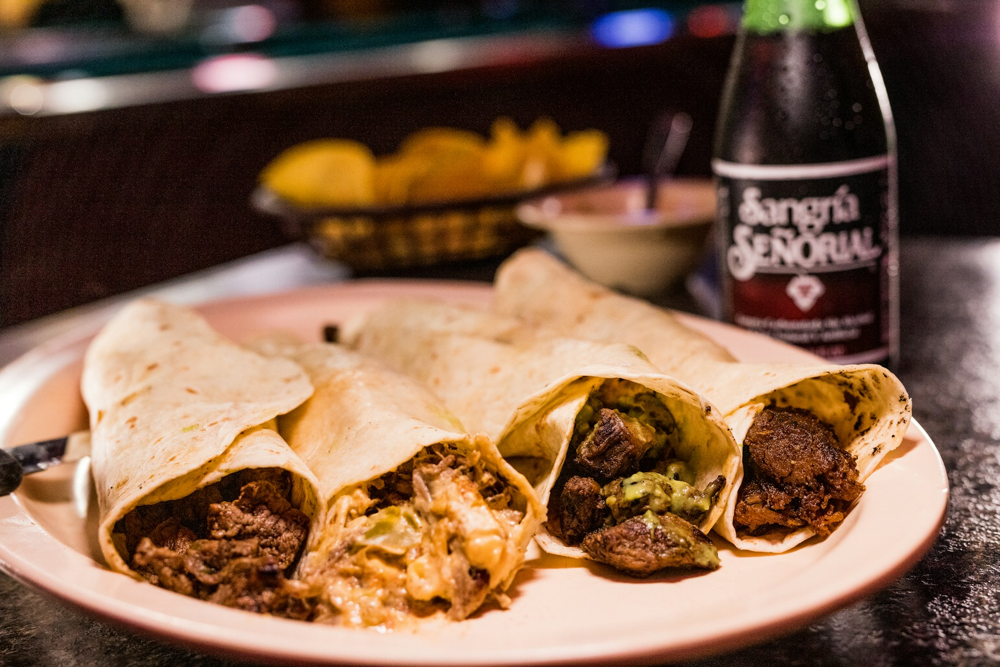

Lasagna Recipe

Description
Chef John's campfire carnitas require some tending and attention while they slow cook in a campfire or in a charcoal grill, but you will be rewarded with the most succulent, tender pork imaginable. Campfire-friendly ways to serve include on tortilla chips, in a bun, or as nachos.
Ingredients
- 4 pounds boneless pork shoulder
- 4 teaspoons kosher salt, or 1 teaspoon per pound of meat
- 1 teaspoon freshly ground black pepper
- 1/2 teaspoon Mexican Oregano
- 1 white onion, sliced
- 1 Fresno chili pepper, seeded and halved, or more to taste
- 6 garlic cloves, skin on
Steps
Cut pork into 2-inch pieces. Stack 2 (7x10x3-inch) disposable foil baking pans and transfer in the pork.
Season with salt, pepper, and oregano, and toss with your hands until everything is evenly coated.
Cover the pan with a sheet of heavy-duty aluminum foil, and crimp tightly around the edges.
Place on top of another large sheet of heavy-duty aluminum foil, and then wrap the foil up over the pan.
All seams should be rolled facing up. Repeat with 2 more sheets of aluminum foil.
Place pan next to a campfire, or in a charcoal grill, and arrange the burning coals evenly around the pan.
Wrap a sheet pan in foil, place over the pan, and arrange some charcoal on top.
Use a probe or laser thermometer to check the temperature on the surface of the bottom pan, as well as the ambient temperature next to the pan.
Try to maintain a constant temperature of between 250 to 300 degrees F (120 to 150 degrees C). To do this, move charcoal further away or closer to the pan as needed.
If cooking next to a campfire and the pan is getting more heat from one direction than the other, rotate the pan occasionally. Cook until falling-apart tender, 4 to 5 hours.
Home